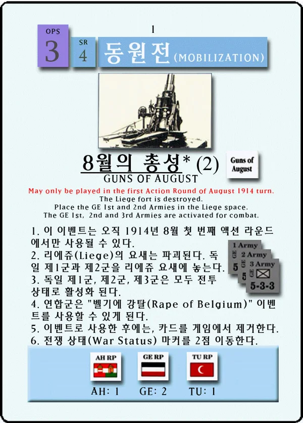
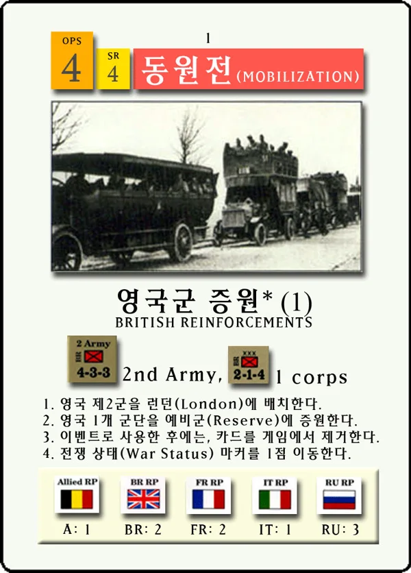
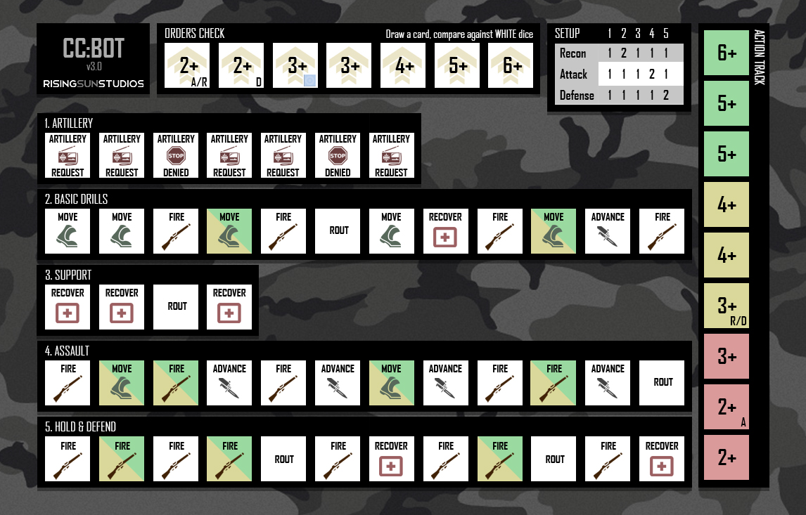

CHOOSE YOUR TABLE오늘은 어떤
오늘은 어떤
전장을 펼칠까요?
게임을 선택하면 각 진행 도우미로 이동합니다. 두 앱의 저장 기록은 각각 따로 관리됩니다.


01 · CDG SOLO
패스 오브 글로리
양 진영의 카드 선택과 운명 주사위, 여섯 행동 라운드를 따라가는 솔로 테이블.
앱 열기 ↗
02 · CC: BOT
Combat Commander
봇 준비부터 명령·행동 판정, 트랙 이동과 턴 종료까지 안내하는 한국어 도우미.
앱 열기 ↗실제 게임판의 이동·공격 대상과 규칙상 선택은 플레이어가 결정합니다. CC: BOT 원작 제작자 jamesWUK.